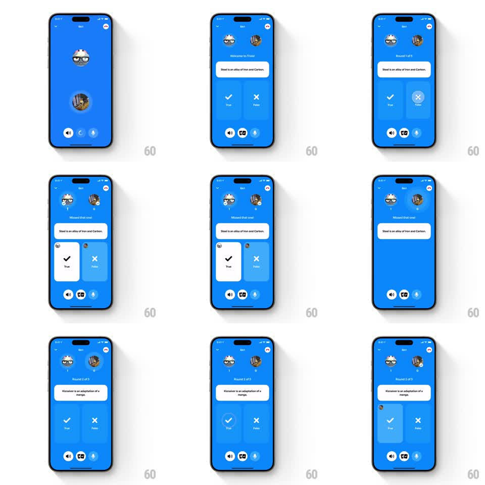

Media
Frame-by-frame

Rebuild this interaction 1:1: Honk's True or False shake feedback - a wrong pick shakes both avatars horizontally, stamps "Missed that one!", and highlights the chosen card while the next round springs in.

Rebuild this interaction 1:1: Honk's True or False shake feedback - a wrong pick shakes both avatars horizontally, stamps "Missed that one!", and highlights the chosen card while the next round springs in.
## Integration
Integration: stack-agnostic spec - springs given as stiffness/damping, timed motions as duration + curve; map every value to your framework and animation library of choice.
## Scene
Blue game screen: two player avatars with score badges at top, a statement card ("Steel is an alloy of Iron and Carbon."), and two big answer buttons - True (check) and False (x). Feedback states: "Welcome to Trivia!", "Round 1 of 5", "Missed that one!", then "Round 2 of 5" with a new statement ("Kiznaiver is an adaptation of a manga.").
## Motion spec
Pattern: horizontal avatar shake as wrong-answer feedback.
- Round entrance: statement card slides up (spring ~300/22, 300ms); True/False buttons rise with a 60ms stagger; round label crossfades.
- Tap an answer: the button compresses (scale 0.95, 100ms), then both answers lock and the player's avatar slides onto the chosen button (spring ~340/16).
- Wrong verdict: both avatars shake horizontally (translateX +-10pt, 4 cycles, 300ms, decaying), the header text swaps to "Missed that one!" (slide-fade, 200ms), and the correct button pulses (scale 1 -> 1.06 -> 1 twice).
- Right verdict: no shake - the chosen button scales up (1 -> 1.1 -> 1, spring ~340/14) and the score badge pops (1 -> 1.35 -> 1, spring ~340/13).
- Advance: the statement card slides left and fades (250ms) as the next statement slides in from the right (spring ~300/22); buttons reset with a fade (200ms).
## Calibration
- The shake is on the avatars, not the card - it reads as the players reacting, not UI chrome.
- Keep True/False buttons large and symmetric; the chosen one gets the avatar stamp and the verdict color.
## Reduced motion
Avatars flash once (opacity dip, 200ms) instead of shaking; verdict text fades in.
## Don't miss
- Statement text wraps inside the card exactly as shown; long statements shrink the type, never the card.
- Score badges only move on correct answers - no motion on a miss beyond the shake.